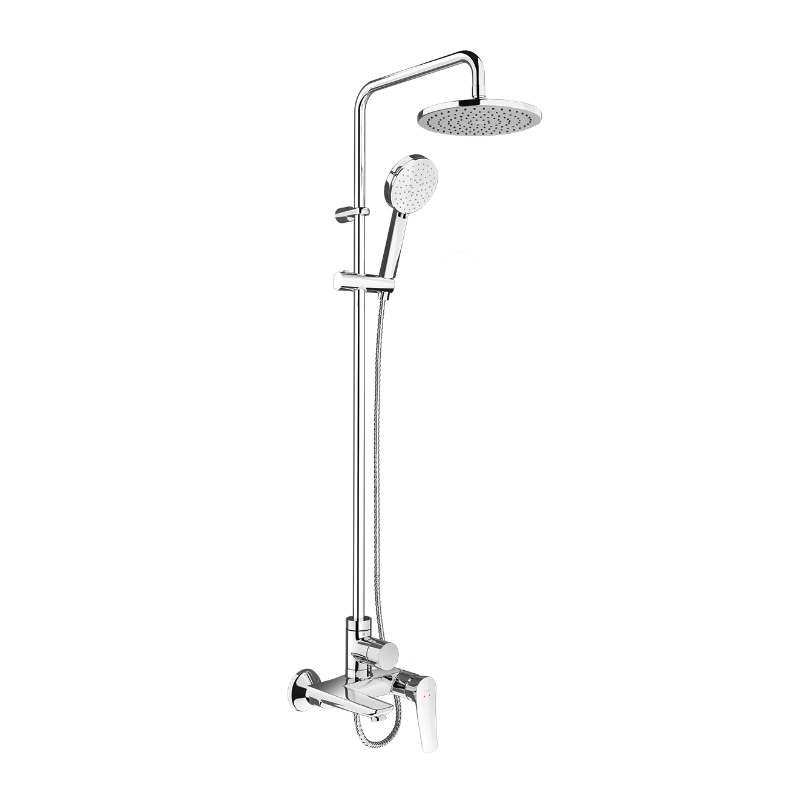
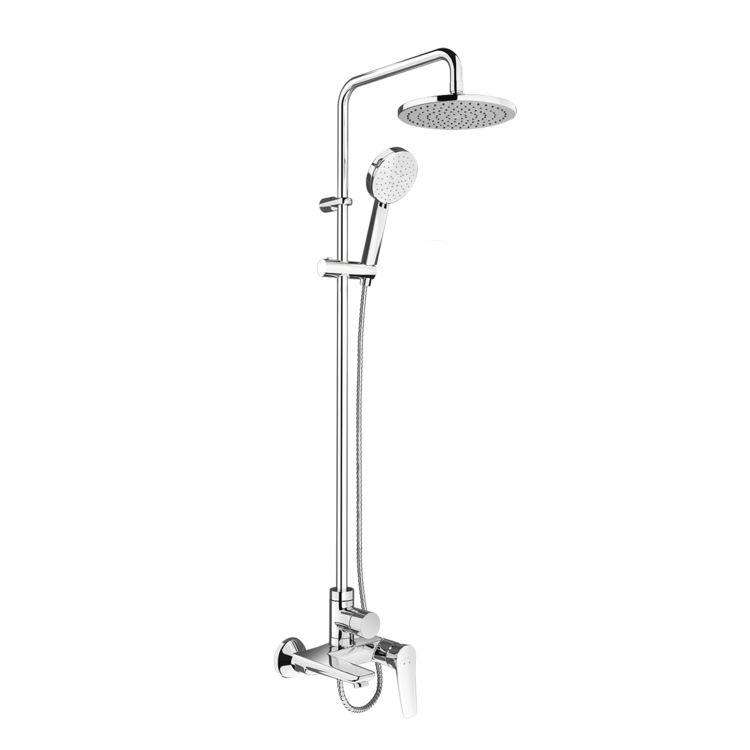
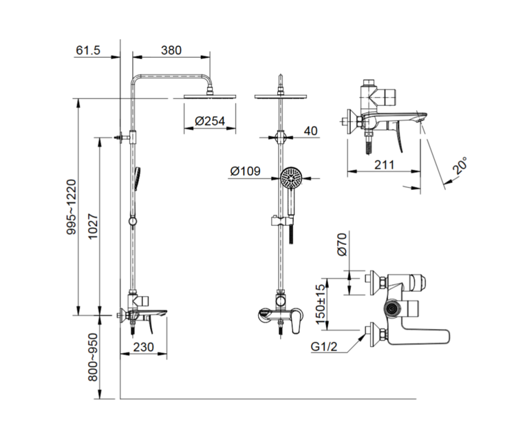

Sen tắm cây BFV-515S là mẫu thiết kế mới nhất đến từ thương hiệu thiết bị vệ sinh INAX, mang lại giải pháp tắm toàn diện và hiện đại cho gia đình bạn. Với thiết kế liền khối chắc chắn cùng những cải tiến thông minh, sản phẩm không chỉ tối ưu hóa công năng mà còn mang đến vẻ đẹp tinh tế, sang trọng cho không gian phòng tắm.Thiết kế sen tắm cây BFV-515SSen tắm cây BFV-515S tích hợp 3 đường nước bao gồm sen đầu, sen tay và vòi xả bồn, giúp tối ưu hóa mọi nhu cầu và trải nghiệm tắm khác nhau của người dùng.Thiết kế cần gạt được chúc xuống phía dưới một cách tinh tế, giúp người dùng dễ dàng quan sát các ký hiệu nóng lạnh, đảm bảo thao tác chính xác và an toàn.Gác sen có khả năng điều chỉnh linh hoạt theo độ cao, cho phép mọi thành viên trong gia đình tùy chỉnh vị trí sen tay phù hợp nhất với vóc dáng.Công nghệ tiết kiệm nướcCông nghệ nước trộn bọt khí giúp dòng nước chảy ra vừa êm ái, tăng cảm giác sảng khoái trên da, vừa hỗ trợ tiết kiệm nước hiệu quả cho người sử dụng.Sen tắm cây BFV-515S sở hữu tốc độ ổn định nhiệt nhanh, giúp bạn tận hưởng làn nước ấm áp ngay lập tức mà không phải chờ đợi lâu.Bát sen tắm được thiết kế kỹ thuật đặc biệt, đảm bảo các tia nước phun ra đồng đều, bao phủ trọn vẹn cơ thể.Chất liệu bền bỉ và an toàn cho sức khỏeLớp mạ Crom/Niken cao cấp: Bề mặt sen cây được bảo vệ bởi lớp mạ Crom-Niken chất lượng cao, giúp chống oxy hóa, giữ cho sản phẩm luôn sáng bóng và bền vững với thời gian.Vật liệu an toàn: Vòi nước được sản xuất với hàm lượng chì thấp (ít chì), tuyệt đối an toàn cho sức khỏe người dùng và thân thiện với môi trường.Đĩa Cartridge siêu bền: Sen tắm cây BFV-515S được trang bị đĩa Cartridge bền bỉ, giúp kiểm soát nước trơn tru, ngăn ngừa rò rỉ và tăng tuổi thọ sử dụng cho sản phẩm.Áp lực nước tiêu chuẩn: Sen cây BFV-515S vận hành hiệu quả trong dải áp lực từ 0.05 MPa đến 0.75 MPa, đảm bảo dòng chảy mạnh mẽ và ổn định trong mọi điều kiện lắp đặt.Video giới thiệu sen tắm INAXBản vẽ sen tắm cây BFV-515SThông số kỹ thuậtChất liệuĐồng mạ Crom/NikenLoạiSen cây tắm nóng lạnh liền khốiKích thước-Thương hiệuINAXThiết kế- 3 đường nước linh hoạt: sen đầu, sen tay và vòi xả chậu - Công nghệ tạo bọt khí giúp nước êm ái và tiết kiệm - Gác sen cho phép điều chỉnh độ cao linh hoạt - Đĩa Cartridge bền bỉ kết hợp tay vặn tiết kiệm nướcÁp lực nước0.05 MPa - 0.75 MPaKhác- Hotline tư vấn và bảo hành: 18006633
Sen tắm cây BFV-515S
Vòi chậu thương hiệu INAX.
Đã cập nhật danh sách yêu thích.
DANH MỤC: Vòi chậu
MÃ SẢN PHẨM: BFV-515S
DEPTH: mm
HEIGHT: mm
WIDTH: mm
Sen tắm cây BFV-515S là mẫu thiết kế mới nhất đến từ thương hiệu thiết bị vệ sinh INAX, mang lại giải pháp tắm toàn diện và hiện đại cho gia đình bạn. Với thiết kế liền khối chắc chắn cùng những cải tiến thông minh, sản phẩm không chỉ tối ưu hóa công năng mà còn mang đến vẻ đẹp tinh tế, sang trọng cho không gian phòng tắm.Thiết kế sen tắm cây BFV-515SSen tắm cây BFV-515S tích hợp 3 đường nước bao gồm sen đầu, sen tay và vòi xả bồn, giúp tối ưu hóa mọi nhu cầu và trải nghiệm tắm khác nhau của người dùng.Thiết kế cần gạt được chúc xuống phía dưới một cách tinh tế, giúp người dùng dễ dàng quan sát các ký hiệu nóng lạnh, đảm bảo thao tác chính xác và an toàn.Gác sen có khả năng điều chỉnh linh hoạt theo độ cao, cho phép mọi thành viên trong gia đình tùy chỉnh vị trí sen tay phù hợp nhất với vóc dáng.Công nghệ tiết kiệm nướcCông nghệ nước trộn bọt khí giúp dòng nước chảy ra vừa êm ái, tăng cảm giác sảng khoái trên da, vừa hỗ trợ tiết kiệm nước hiệu quả cho người sử dụng.Sen tắm cây BFV-515S sở hữu tốc độ ổn định nhiệt nhanh, giúp bạn tận hưởng làn nước ấm áp ngay lập tức mà không phải chờ đợi lâu.Bát sen tắm được thiết kế kỹ thuật đặc biệt, đảm bảo các tia nước phun ra đồng đều, bao phủ trọn vẹn cơ thể.Chất liệu bền bỉ và an toàn cho sức khỏeLớp mạ Crom/Niken cao cấp: Bề mặt sen cây được bảo vệ bởi lớp mạ Crom-Niken chất lượng cao, giúp chống oxy hóa, giữ cho sản phẩm luôn sáng bóng và bền vững với thời gian.Vật liệu an toàn: Vòi nước được sản xuất với hàm lượng chì thấp (ít chì), tuyệt đối an toàn cho sức khỏe người dùng và thân thiện với môi trường.Đĩa Cartridge siêu bền: Sen tắm cây BFV-515S được trang bị đĩa Cartridge bền bỉ, giúp kiểm soát nước trơn tru, ngăn ngừa rò rỉ và tăng tuổi thọ sử dụng cho sản phẩm.Áp lực nước tiêu chuẩn: Sen cây BFV-515S vận hành hiệu quả trong dải áp lực từ 0.05 MPa đến 0.75 MPa, đảm bảo dòng chảy mạnh mẽ và ổn định trong mọi điều kiện lắp đặt.Video giới thiệu sen tắm INAXBản vẽ sen tắm cây BFV-515SThông số kỹ thuậtChất liệuĐồng mạ Crom/NikenLoạiSen cây tắm nóng lạnh liền khốiKích thước-Thương hiệuINAXThiết kế- 3 đường nước linh hoạt: sen đầu, sen tay và vòi xả chậu - Công nghệ tạo bọt khí giúp nước êm ái và tiết kiệm - Gác sen cho phép điều chỉnh độ cao linh hoạt - Đĩa Cartridge bền bỉ kết hợp tay vặn tiết kiệm nướcÁp lực nước0.05 MPa - 0.75 MPaKhác- Hotline tư vấn và bảo hành: 18006633
DANH MỤC: Vòi chậu
MÃ SẢN PHẨM: BFV-515S
DEPTH: mm
HEIGHT: mm
WIDTH: mm